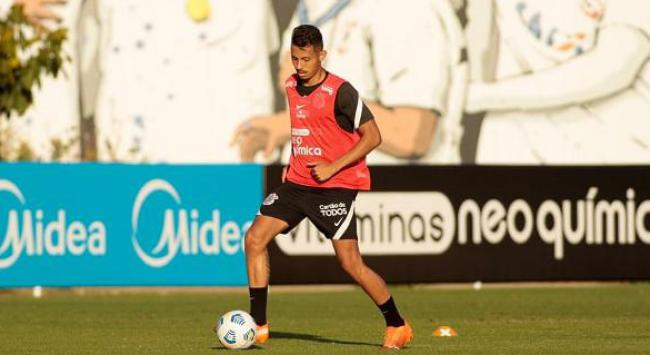

Home
Nossa História
Títulos
Classificação
Cadastre-se
Corinthians
DUPLA NA MR
Entenda por que o Timão ficou mais próximo de Renato Augusto do que Paulinho
MANIFESTAÇÃO
Torcedores do Corinthians protestam com faixas no CT e na sede do clube; confira
TRABALHO NO CT
Com 'reforços' da base, Corinthians treina de olho no duelo com o Atlético-MG

TODOS OS DIREITOS RESERVADOS
2021